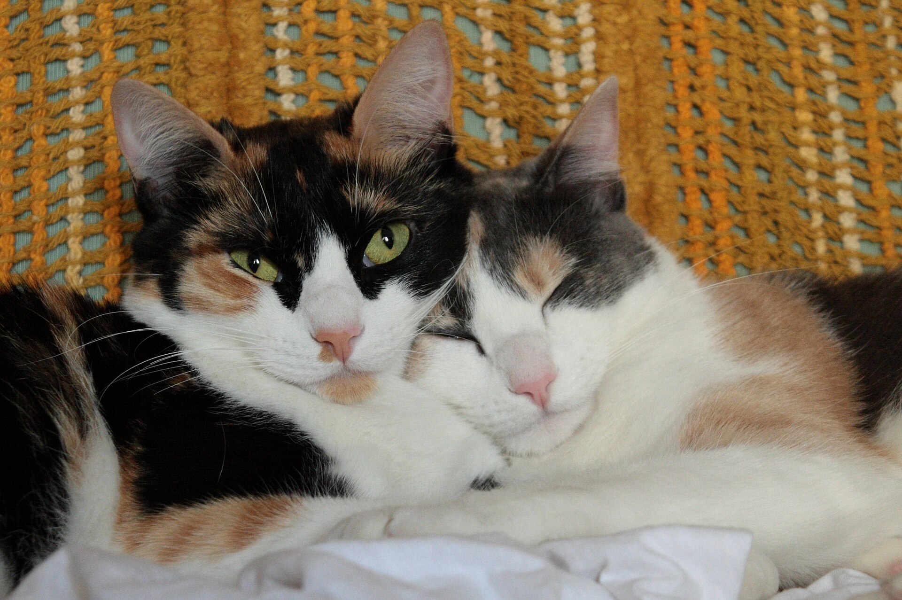
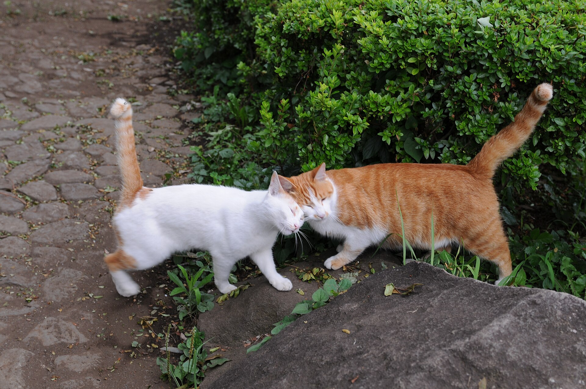
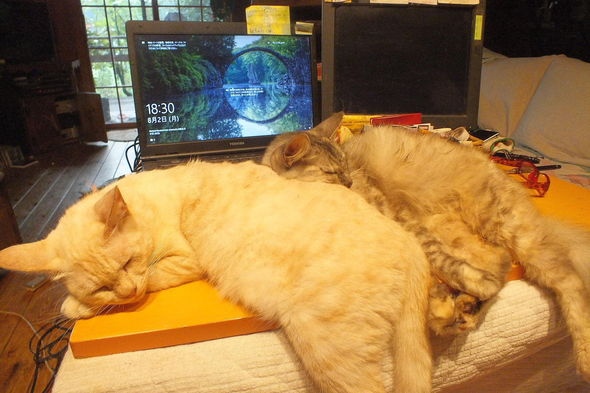

猫の名前ランキングと名づけのコツ：人気の名前と日本らしい名前の決め方
公開 2026-11-05・日本ねこ編集部
結論から

新しい
この
アニコム損保の猫の名前ランキング2025
アニコム損保が
| 順位 | 名前 | ひとこと |
|---|---|---|
| 1位 | ムギ | 6年連続の |
| 2位 | レオ | 定番の |
| 3位 | ルナ | 325頭 |
ここでは

茶トラの
調査が違うと1位も変わる
アイペット損害保険が
対象に
2文字の名前が多く和風の名前も増えている
2023年版の
和風の
猫は自分の名前がわかる？
上智大学の
実験では
ただし研究者は
呼びやすい名づけのコツ5つ
次の
- 2〜3音で
呼びやすい 短いと名前に する。 覚えやすく 何度も 呼びやすくなります。 - 母音で
終わる 猫はやわらかい 響きに する。 明る い 高めの 声で 呼ぶ ほうが 反応しやすいと いわれます。 - 家族の
名前や 猫が「おいで」 「だめ」に 似た音は 避ける。 混乱しに くくなります。 - 同居の
猫と 2匹とも似た 響きは 避ける。 振り向いてしまうことがあります。 - 叱る
ときは 名前が名前を 使わない。 いやな 経験と 結びつくと 寄ってきてくれなくなることがあります。

愛称を
日本らしい名前を考えるヒント
和風の
- 食べもの
（おもち・きな こ・ あずき・だい ふくなど） - 毛色や
模様 （すみ・ゆき・こむぎなど） - 季節や
自然 （さくら・も みじ・ そらなど） - 昔ながらの
呼び名 （たま・みけ・とらなど）
どれも
名前を覚えてもらうコツ
決まった
- ごはんや
おやつの前に 名前の名前を 呼ぶ。 あとに いいことが 起きると 結び つきます。 - 返事を
したら しっぽがほめる。 立って 近づいてきたらうれしい サインです。 気持ちの 読み方は猫の しっぽの が気持ち完全ガイド 参考に なります。 - 無理に
反応させない。 猫が呼びかけに 返事を しない 日も あります。 そっとなでてあげたい 場合は猫が よろこぶ、 もなで ポイント3つ 役立ちます。
こんなときは動物病院へ
これまで
耳を
まとめ
人気の
うちの
参考にした情報
- 猫の
名前ランキング2025の （DIME）紹介記事 - アニコム損保の
名前ランキング発表 （リセマム）（PR TIMES掲載） - ペットの
名前ランキング2025! 犬は （Impress WebTAN）「むぎ」が 5連覇、 猫は 「○○」が 初の トップ【アイペット損害保険 調べ】 - 猫の
名前ランキング2023! 3位 （All About）「レオ」、 2位 「むぎ」、 1位は 2022年に 2位だった 食べ物の 名前 - 猫が
自分の （Nature Asia）名前を 聞き分ける 研究の 紹介 - 猫に
つける （livedoorニュース）『和風の 名前』を 考える ときの ヒント5選 どんな 名前が 人気? 名付けの コツも 解説
この
よくある質問
猫の名前で一番人気はなんですか？
アニコム損保の
猫は自分の名前がわかりますか？
上智大学の
猫の名前は2文字か3文字がいいですか？
猫は
迎えたあとに名前を変えてもいいですか？
変えても